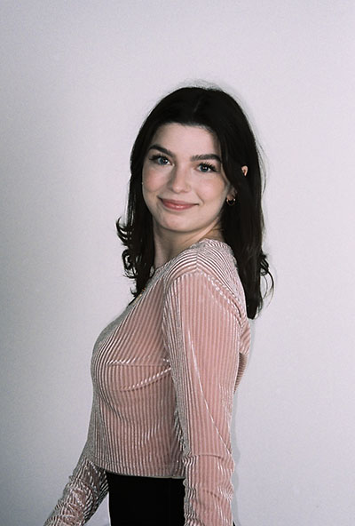
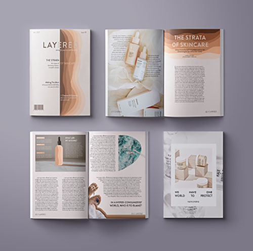
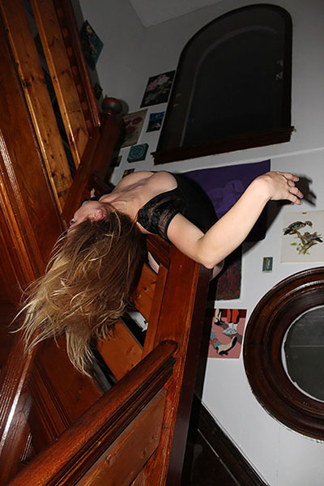

Molly Irland
Digital Advertising and Marketing minor
S.I. Newhouse School of Public Communications: Class of 2024
My name is Molly Irland, and I have a passion for communicating, whether that be through words or graphic imagery, ideation or fantasizing; creatively or strategically. Ever since I was a little girl, the world of makeup and beauty absolutely enamored me. The idea of translating a way of living, a set of ideals, and habitual self care into product packaging has made me more than just a sucker for packaging. One day I will work for one of my favorite luxury makeup or skincare companies, leading product innovations and branding identities that are good for our planet and make people feel good about themselves, just as it has done for me.
Creative

In what initially sparked my interest in Advertising, my creative courses and executions have allowed me to have a bit more fun and delve into whatever creativity I can harness. Through graphic design, student-run magazines, and various internships, I have accumulated various creative projects for my portfolio.
Strategy

Within the strategic track, I have been able to understand the thinking, planning, and execution behind all of the creative campaigns I admire. In courses such as Marketing Communications and Advertising Research and Design, I have planned and executed various integrated marketing campaigns using strategic advertising.
Thoughts & Feelings

Going back to my roots, I am a writer at heart. From the pages of my journal, poetry written in high school and rewritten in college, this is an inside look into my inner thoughts and feelings, with all of the vulnerability I can muster!
Get in touch: